1. Environment Setup
Before running any administrative cmdlets, the PowerShell environment is verified and prepared. This covers execution policy, module availability, and establishing remote connectivity to SRV-HYPERV-01, which is not domain-joined and requires explicit WinRM configuration.
1.1 Execution Policy
The session opens on DC01 logged in as LAB\MT.Admin. The execution policy is checked before any scripts are run.
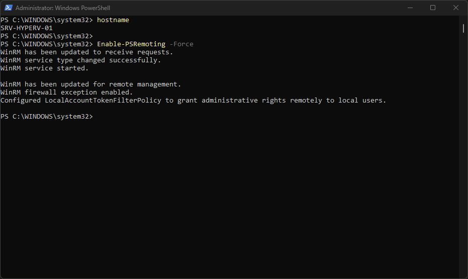
Get-ExecutionPolicy -List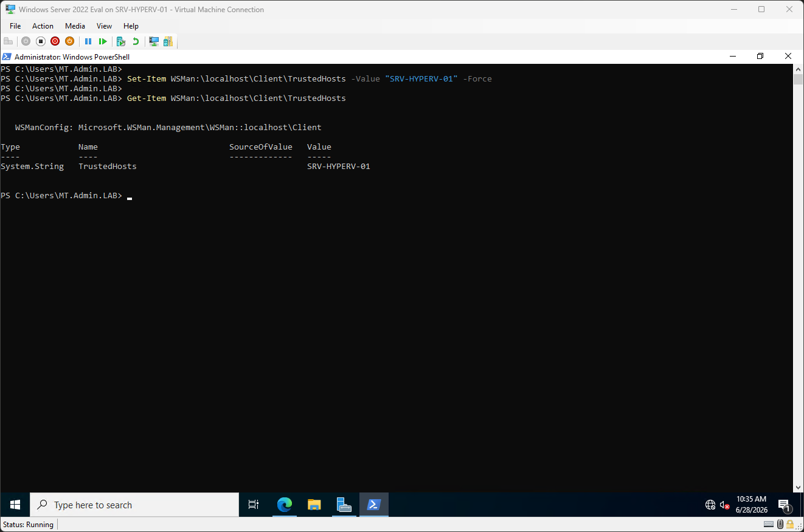
LocalMachine is already set to RemoteSigned, meaning scripts downloaded from the internet must be signed, while locally created scripts run without restriction. This is the correct enterprise baseline. The policy is explicitly confirmed and set to ensure consistency.
Set-ExecutionPolicy -ExecutionPolicy RemoteSigned -Scope LocalMachine
Get-ExecutionPolicy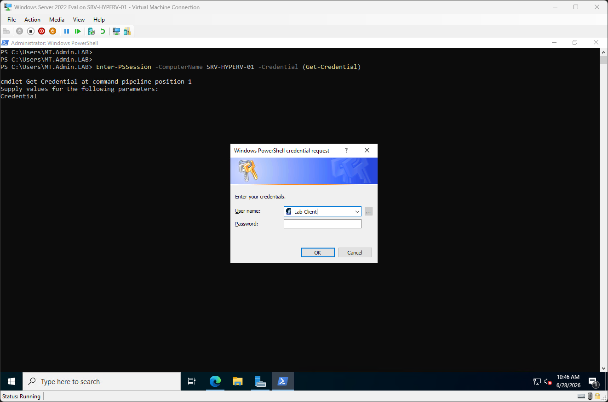
1.2 Module Verification
The key RSAT management modules are confirmed before proceeding. ActiveDirectory and DhcpServer were installed as part of the AD DS role setup. DnsServer is verified separately after importing the ActiveDirectory module.
Get-Module -ListAvailable | Where-Object {$_.Name -in @('ActiveDirectory','DHCPServer')} | Select-Object Name, Version, ModuleType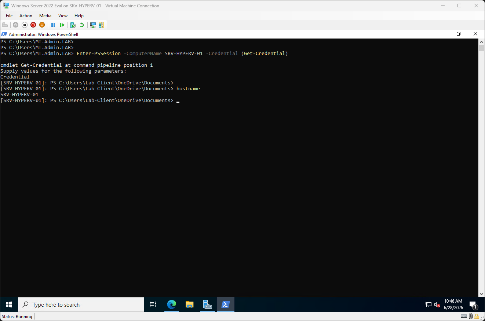
Import-Module ActiveDirectory
Get-Module -ListAvailable | Where-Object {$_.Name -in @('ActiveDirectory','DHCPServer','DNSServer')} | Select-Object Name, Version, ModuleType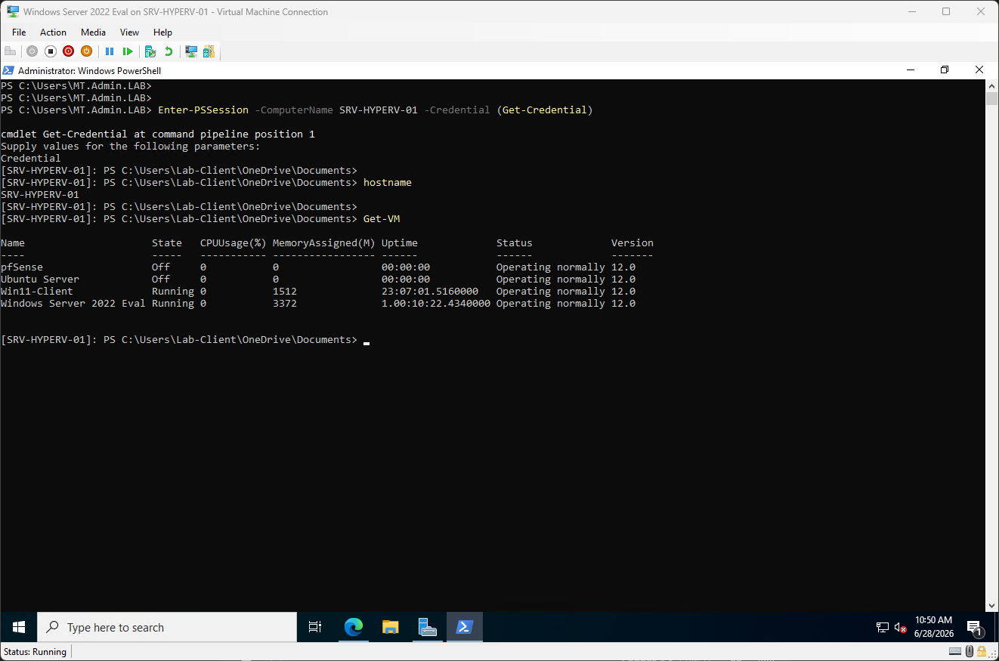
1.3 PSRemoting to SRV-HYPERV-01
SRV-HYPERV-01 runs Windows 11 Pro and is not domain-joined. Establishing a remote PowerShell session requires two prerequisites: WinRM must be enabled on the host itself, and DC01 must trust it via the TrustedHosts list. Without TrustedHosts configured, Kerberos authentication fails because the host is outside the domain.
The initial PSSession attempt fails with a Kerberos error because the switches were powered off, cutting the L2 path between the DC01 VM and SRV-HYPERV-01. Once network connectivity is restored, TrustedHosts is configured on DC01 and Enable-PSRemoting is run on the host.
Enter-PSSession -ComputerName SRV-HYPERV-01 -Credential (Get-Credential)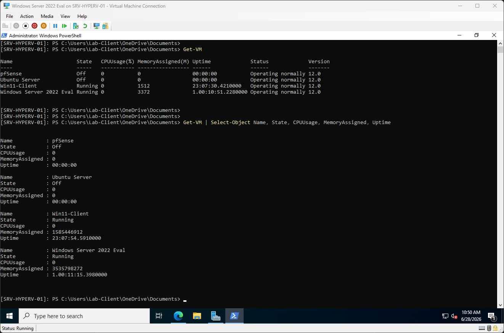
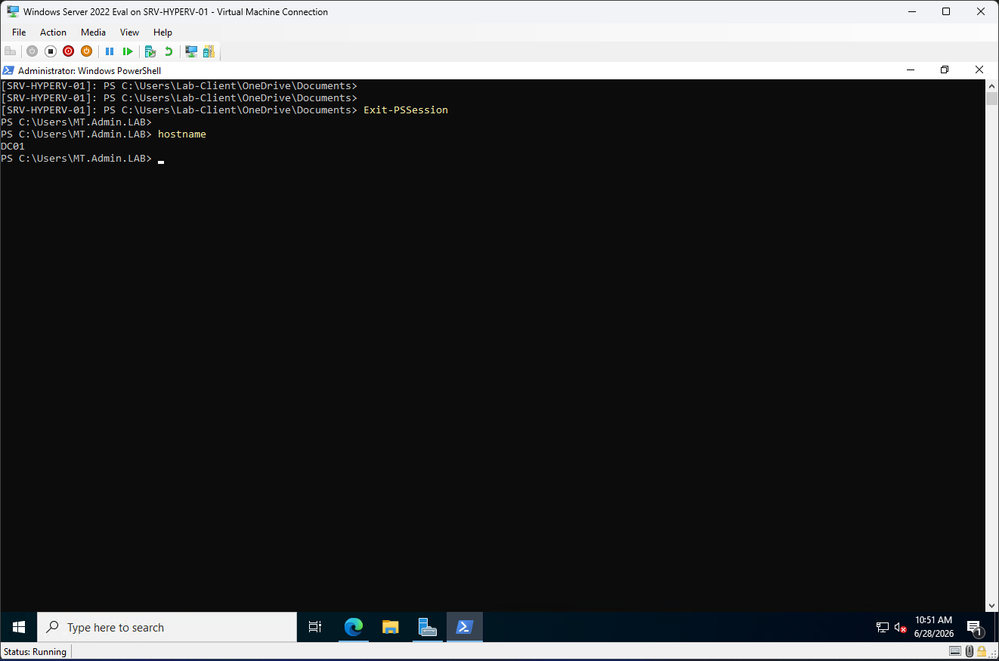
After powering on the switches and restoring network connectivity, Enable-PSRemoting is run on SRV-HYPERV-01 and TrustedHosts is configured on DC01.
# On SRV-HYPERV-01 (run locally on the host):
Enable-PSRemoting -Force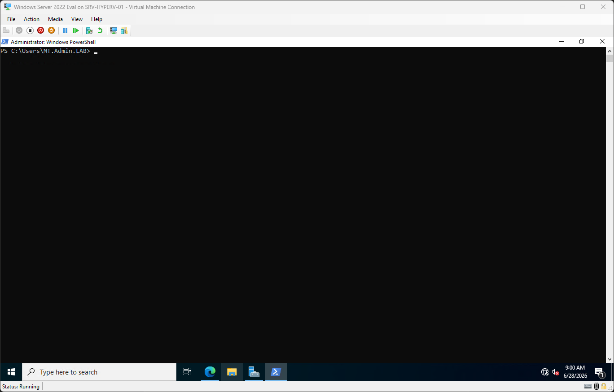
# On DC01:
Set-Item WSMan:\localhost\Client\TrustedHosts -Value 'SRV-HYPERV-01' -Force
Get-Item WSMan:\localhost\Client\TrustedHosts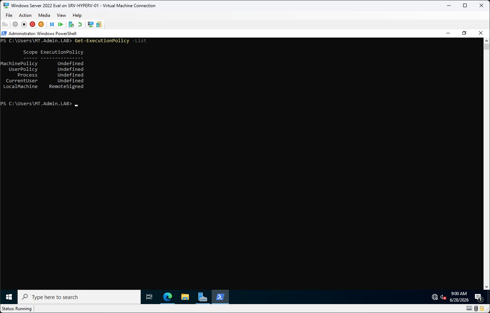
The PSSession is retried using the local Lab-Client account on SRV-HYPERV-01, since the host is not domain-joined and cannot authenticate domain credentials.
Enter-PSSession -ComputerName SRV-HYPERV-01 -Credential (Get-Credential)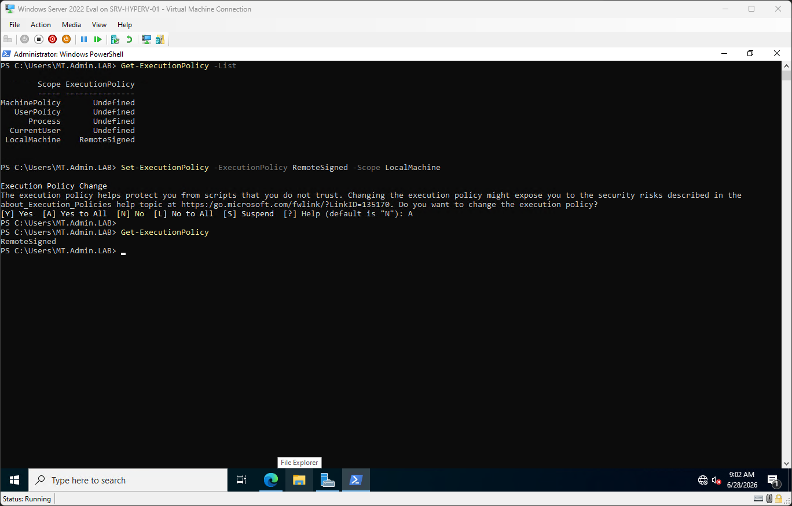
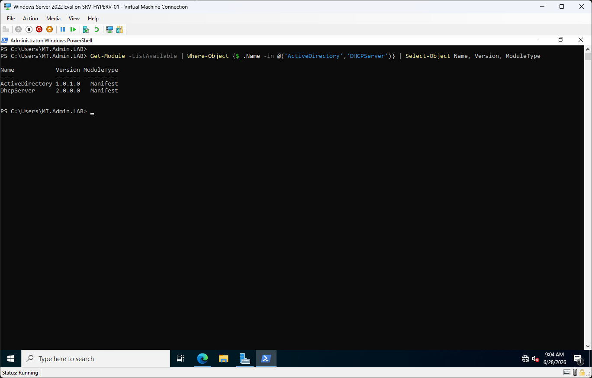
With the remote session established, a quick VM inventory is run to confirm Hyper-V management is accessible before exiting.
Get-VM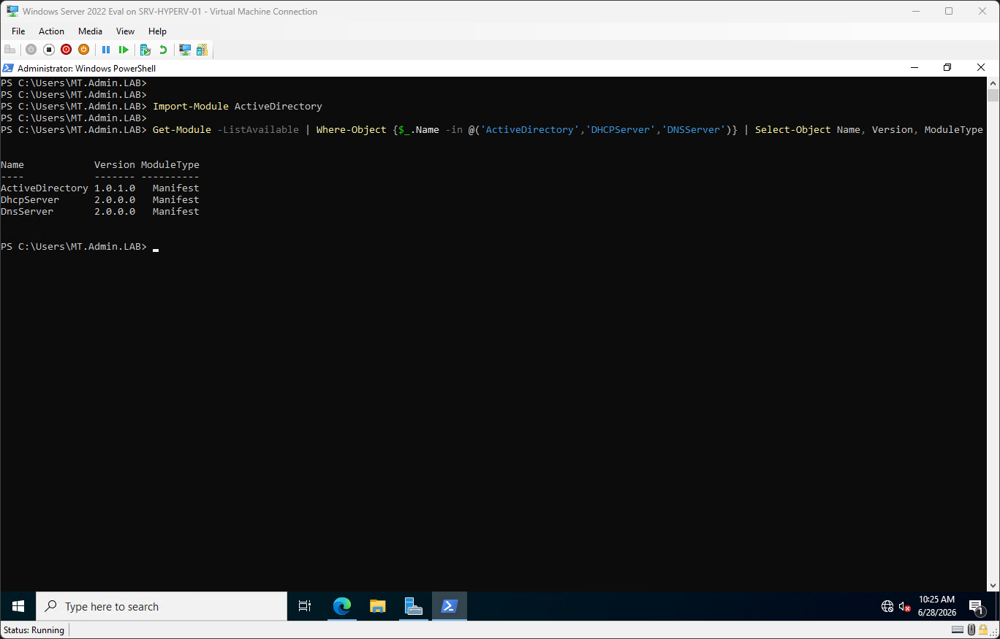
Get-VM | Select-Object Name, State, CPUUsage, MemoryAssigned, UptimeExit-PSSession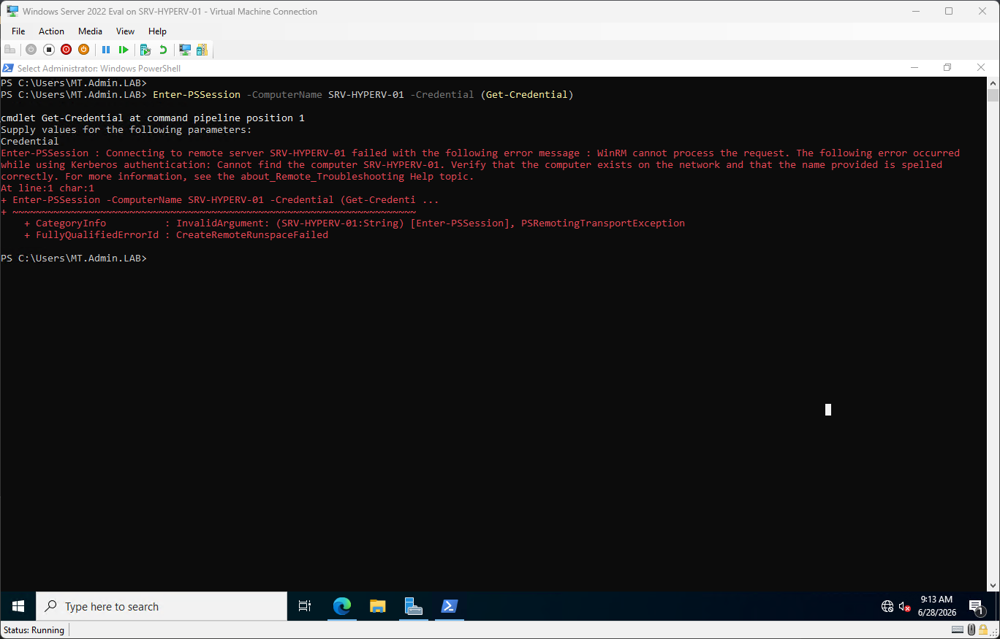
2. Active Directory Administration
Active Directory is the identity foundation of the lab. These cmdlets demonstrate querying and managing the domain structure, user accounts, and security groups, reflecting day-to-day AD administration tasks common in enterprise environments.
2.1 Domain Structure Query
The OU structure is queried to confirm the organizational layout built during the AD environment setup. This returns the full distinguished name path for each OU, which is important for GPO targeting and user placement.
Get-ADOrganizationalUnit -Filter * | Select-Object Name, DistinguishedName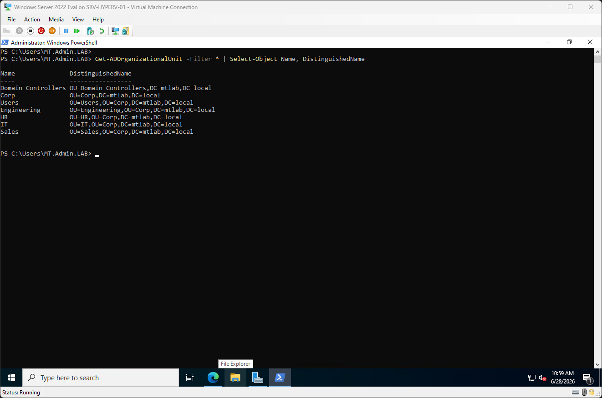
2.2 User Account Inventory
All domain user accounts are returned with their enabled status. This confirms the accounts created during the AD environment setup and identifies any disabled accounts.
Get-ADUser -Filter * | Select-Object Name, SamAccountName, Enabled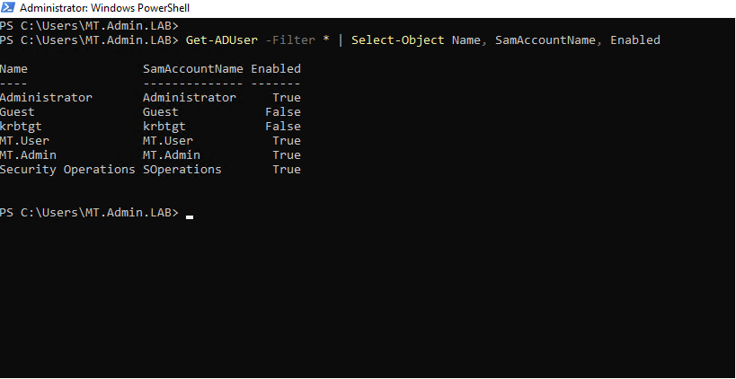
2.3 Security Group Membership
Domain Admins and Protected Users group membership is verified. MT.Admin is confirmed in both groups, reflecting the privileged account configuration established during AD setup.
Get-ADGroupMember -Identity 'Domain Admins' | Select-Object Name, SamAccountName, objectClass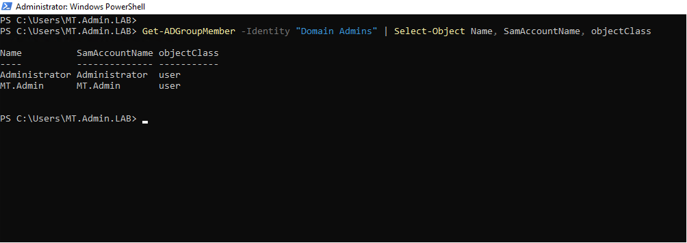
Get-ADGroupMember -Identity 'Protected Users' | Select-Object Name, SamAccountName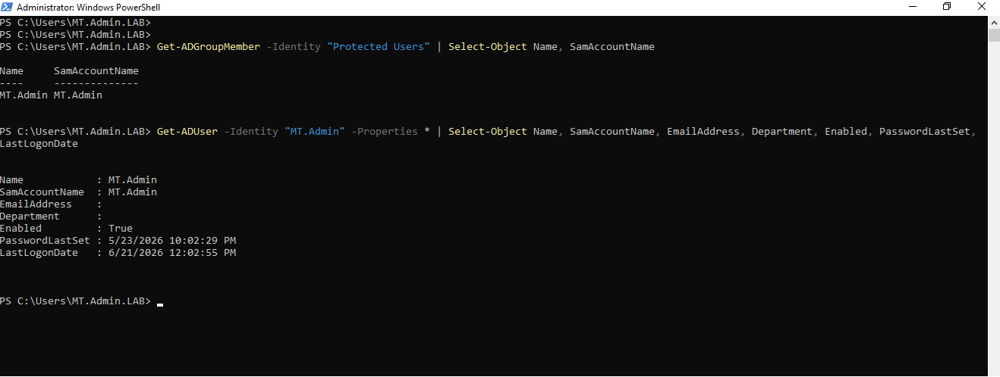
2.4 Full Group Inventory
All AD security groups are listed with their scope and category. This provides a complete view of the group structure including default built-in groups and the DHCP-related groups added when the DHCP Server role was installed.
Get-ADGroup -Filter * | Select-Object Name, GroupScope, GroupCategory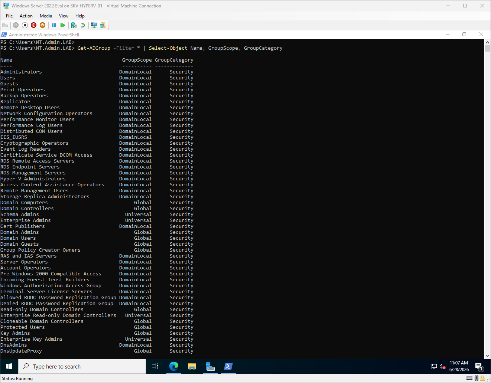
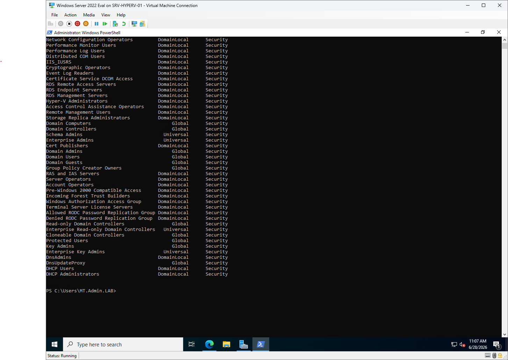
2.5 Detailed User Attribute Query
A targeted query against MT.Admin returns extended properties including last logon date and password set timestamp. EmailAddress and Department are blank in the lab context, which is expected for a home lab environment.
Get-ADUser -Identity 'MT.Admin' -Properties * | Select-Object Name, SamAccountName, EmailAddress, Department, Enabled, PasswordLastSet, LastLogonDateOutput shown in the second command of AD4.png above.
2.6 User Lifecycle: Create, Modify, Disable
A test user account is provisioned to demonstrate the full AD user management lifecycle. The account is created in the Corp\Users OU with a secure password, updated with department and title attributes, and then disabled to simulate an offboarding workflow.
New-ADUser -Name 'Test.User' -SamAccountName 'Test.User' -UserPrincipalName 'Test.User@mtlab.local' \
-Path 'OU=Users,OU=Corp,DC=mtlab,DC=local' \
-AccountPassword (ConvertTo-SecureString 'Lab@12345!' -AsPlainText -Force) -Enabled $true
Get-ADUser -Identity 'Test.User' | Select-Object Name, SamAccountName, Enabled
Set-ADUser -Identity 'Test.User' -Department 'IT' -Title 'Lab-Technician'
Get-ADUser -Identity 'Test.User' -Properties Department, Title | Select-Object Name, Department, Title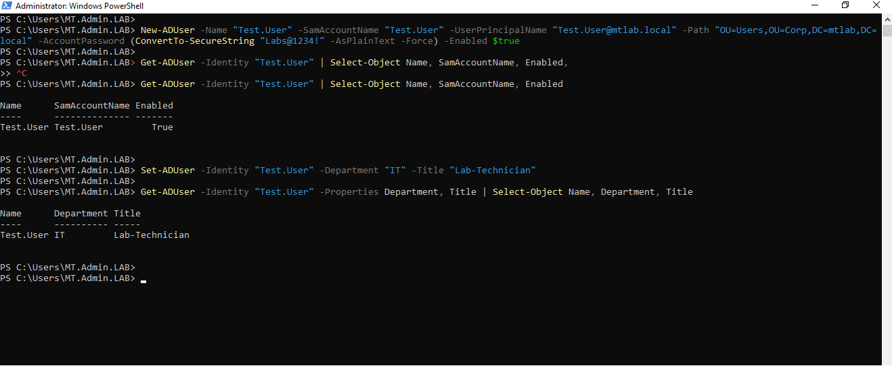
Disable-ADAccount -Identity 'Test.User'
Get-ADUser -Identity 'Test.User' | Select-Object Name, Enabled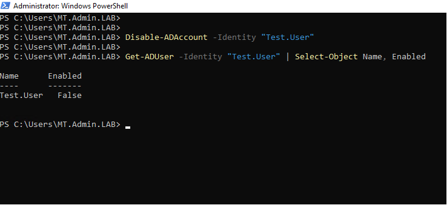
3. DHCP Administration
The DHCP Server role is installed on DC01 and serves three VLAN scopes across the lab. These cmdlets query scope configuration, active lease data, and server authorization status, demonstrating programmatic visibility into DHCP without relying on the Server Manager GUI.
3.1 Scope Inventory
All three VLAN scopes are returned with their subnet mask, state, lease range, and duration. Each scope maps directly to a VLAN SVI configured on the Cisco Catalyst 3550.
Get-DhcpServerv4Scope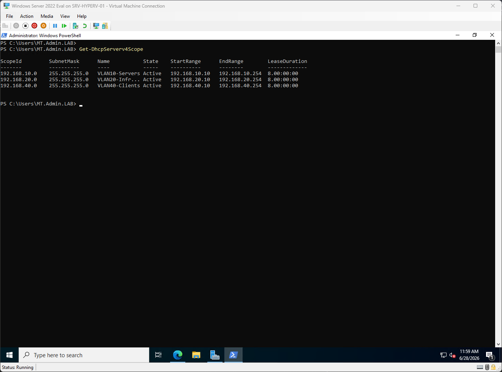
3.2 Scope Statistics and Active Leases
Scope statistics show current utilization across all three VLANs. VLAN 10 (Servers) shows zero leases as expected, since all server addresses are statically assigned. VLAN 20 (Infrastructure) and VLAN 40 (Clients) show active leases, confirming the DHCP relay configuration on the 3550 is functioning correctly.
Get-DhcpServerv4ScopeStatistics
Get-DhcpServerv4Lease -ScopeId 192.168.40.0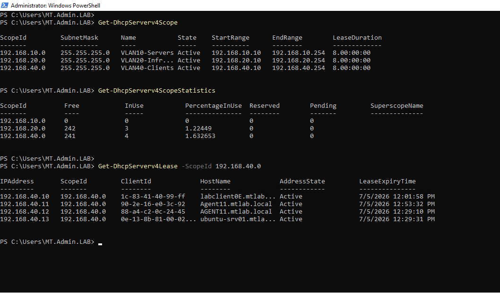
3.3 DHCP Server Settings
The server-level DHCP configuration is queried to confirm authorization status and operational settings.
Get-DhcpServerSetting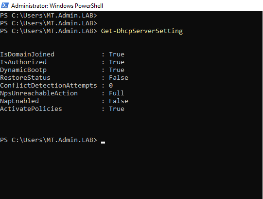
4. DNS Administration
DC01 serves as the primary authoritative DNS server for the mtlab.local domain. The Raspberry Pi 5 at 192.168.10.5 operates as a secondary/backup resolver. These cmdlets provide visibility into zone configuration, forwarder settings, and registered resource records.
4.1 Zone Inventory
All configured DNS zones are returned with their type, integration status, and direction. The mtlab.local forward zone is AD-integrated (IsDsIntegrated: True), which means zone data is stored in Active Directory and replicated automatically.
Get-DnsServerZone | Select-Object ZoneName, ZoneType, IsAutoCreated, IsDsIntegrated, IsReverseLookupZone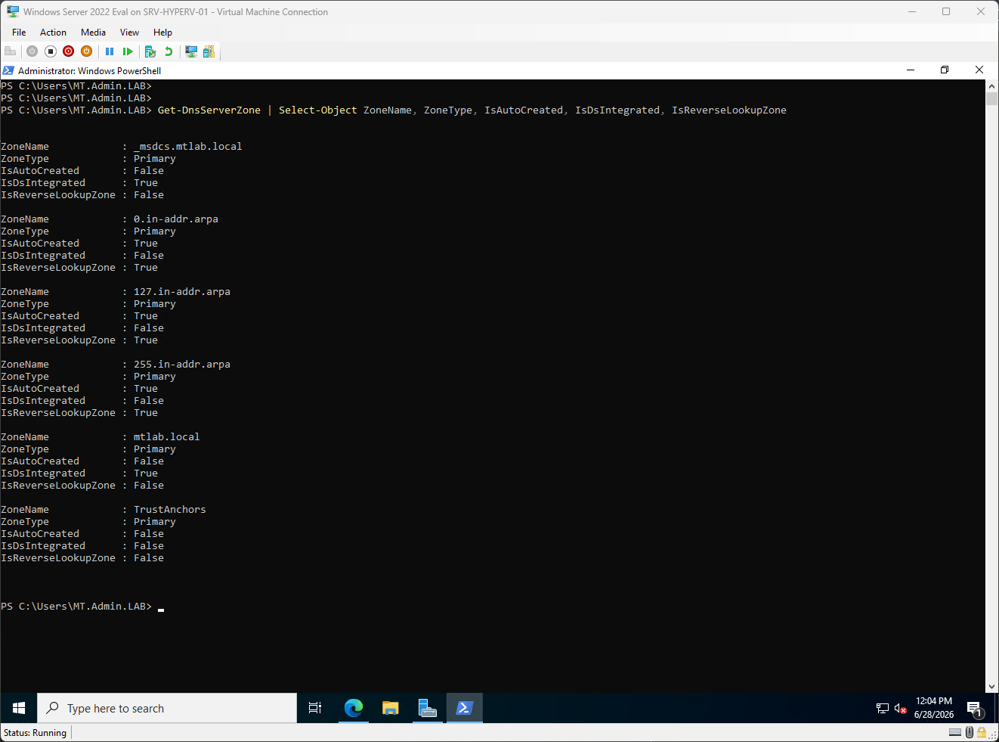
4.2 Forwarder Configuration
DNS forwarders are queried to confirm external resolution is configured correctly. DC01 forwards queries it cannot answer locally to 8.8.8.8 (Google) and 1.1.1.1 (Cloudflare). The absence of the Raspberry Pi or DC01's own IP in the forwarder list is expected: DC01 is authoritative and does not forward to itself, and the Pi is a peer resolver, not a forwarder.
Get-DnsServerForwarder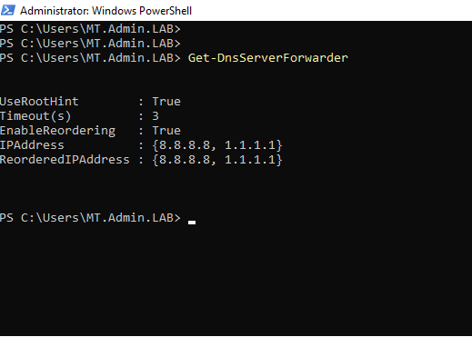
4.3 Resource Record Query
Resource records in the mtlab.local forward zone are listed. The output includes the standard AD SRV records for Kerberos, LDAP, and Global Catalog services, as well as A records for domain-joined machines including AGENT11, dc01, labclient0E, and MTClient1.
Get-DnsServerResourceRecord -ZoneName 'mtlab.local' | Select-Object HostName, RecordType, TimeToLive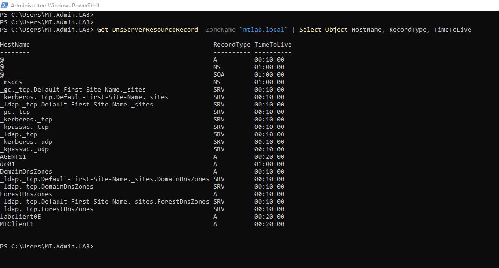
5. Hyper-V Administration
Hyper-V management commands run inside a remote PSSession to SRV-HYPERV-01, since the Hyper-V module resides on the host itself and cannot be invoked remotely without the session context. The session is re-established using the local Lab-Client account.
5.1 Remote Session
A new PSSession is opened to SRV-HYPERV-01 for Hyper-V management. The credential prompt accepts the local Lab-Client account. Connection is confirmed with hostname.
Enter-PSSession -ComputerName SRV-HYPERV-01 -Credential (Get-Credential)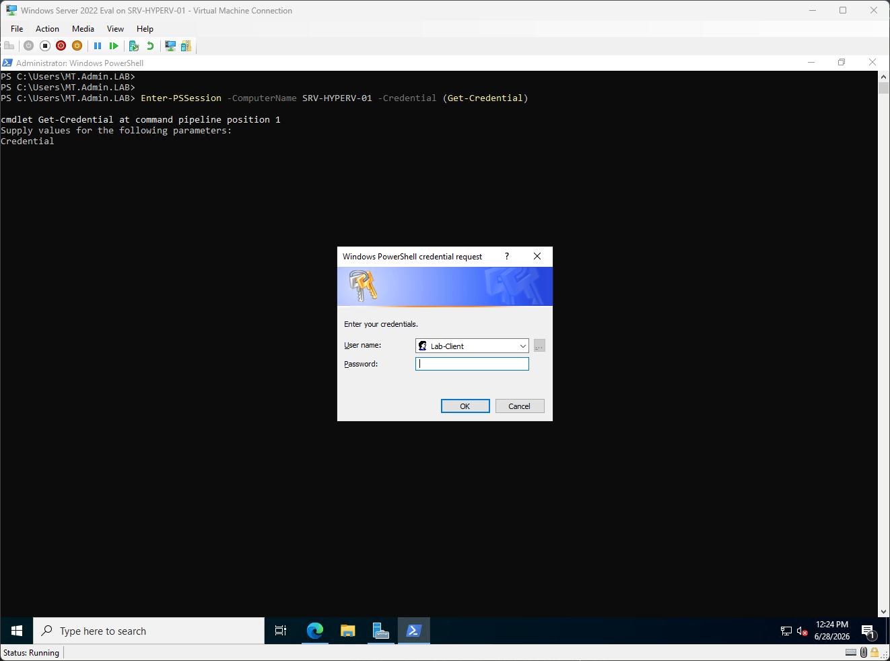
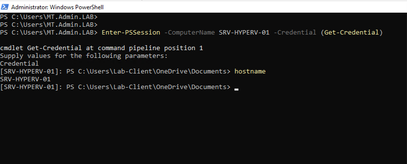
5.2 VM Inventory
All four VMs on the Hyper-V host are returned with state, CPU usage, memory, and uptime. pfSense and Ubuntu Server are powered off. Win11-Client and Windows Server 2022 Eval are running with confirmed uptime and memory allocation.
Get-VM | Select-Object Name, State, CPUUsage, MemoryAssigned, Uptime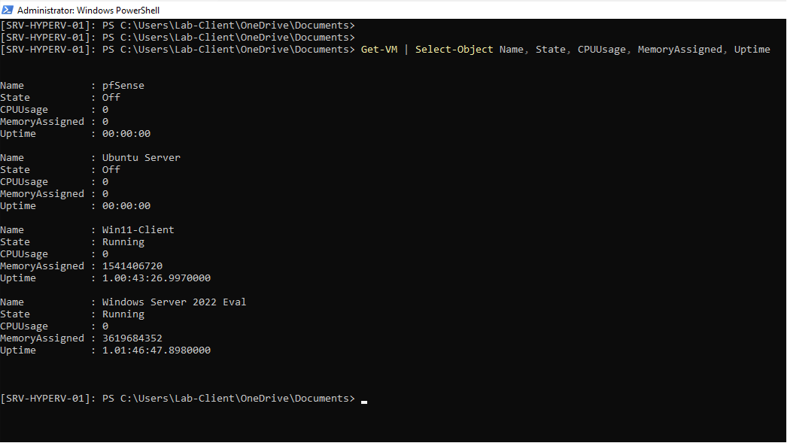
5.3 Virtual Switch Inventory
All virtual switches are returned with their type and bound physical adapter. This confirms the Hyper-V networking configuration documented in the Hyper-V Configuration section.
Get-VMSwitch | Select-Object Name, SwitchType, NetAdapterInterfaceDescription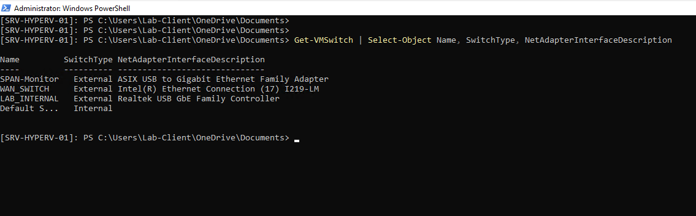
5.4 VM Disk Path
The VHDX path for the Ubuntu Server VM is queried to confirm the virtual disk location on the D: drive of SRV-HYPERV-01.
Get-VMHardDiskDrive -VMName 'Ubuntu Server' | Select-Object VMName, Path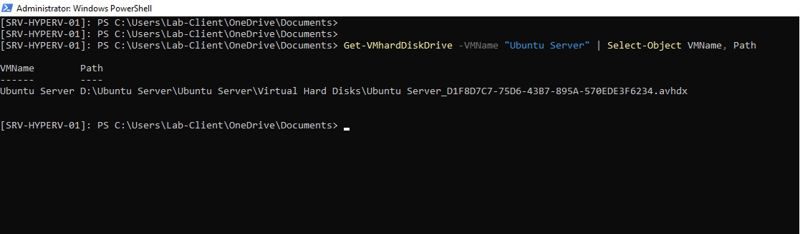
5.5 Exit Remote Session
The PSSession to SRV-HYPERV-01 is closed and the return to DC01 is confirmed.
Exit-PSSession
hostname
whoami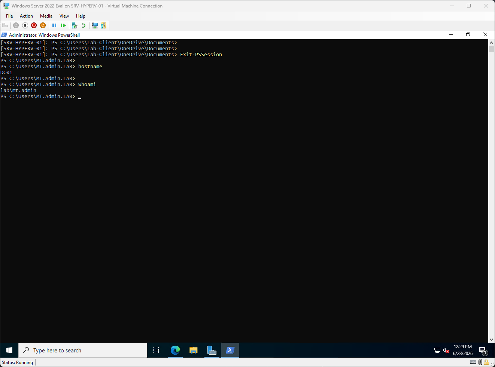
6. System Health and Reporting
A system health check is run against DC01 to confirm disk space, service status, recent event log errors, and server uptime. This reflects the kind of operational reporting a sysadmin would run routinely to validate server health.
6.1 Disk Space
Filesystem drives are queried to confirm available space on DC01. The C: drive shows approximately 16.7GB used and 109.8GB free.
Get-PSDrive -PSProvider FileSystem | Select-Object Name, Used, Free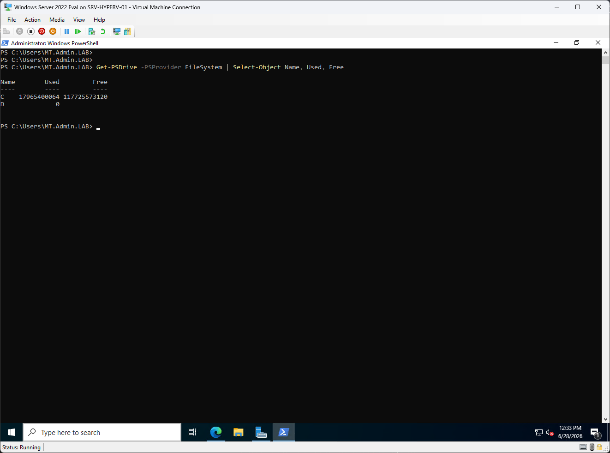
6.2 Critical Service Status
The five critical domain controller services are checked: Active Directory Web Services (ADWS), DHCP, DNS, Netlogon, and Windows Time (W32Time). All five are confirmed Running with Automatic start type.
Get-Service ADWS, DNS, DHCP, Netlogon, W32Time | Select-Object Name, Status, StartType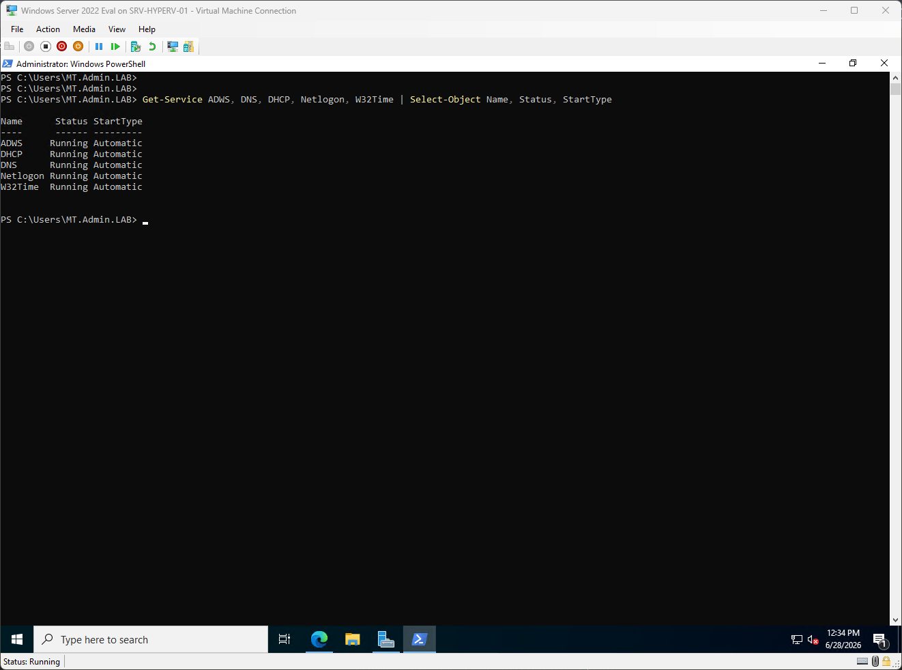
6.3 System Event Log Errors
The 10 most recent System event log errors are returned. The majority are NETLOGON errors from AGENT11 and LABCLIENT0E, which are expected in a lab environment where machines come online and offline. Two Microsoft-Windows-Time-Service entries from 6/22 indicate minor time sync events, both benign.
Get-EventLog -LogName System -EntryType Error -Newest 10 | Select-Object TimeGenerated, Source, Message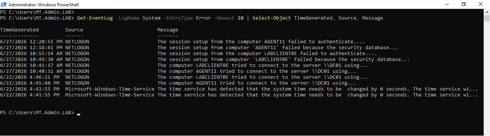
6.4 Server Uptime
DC01 uptime is calculated by subtracting the last boot time from the current date/time. The server had been running for approximately 15 hours at the time of the health check.
(Get-Date) - (gcim Win32_OperatingSystem).LastBootUpTime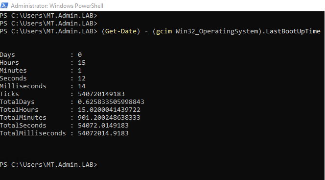
7. Group Policy Administration
Group Policy cmdlets require the GroupPolicy module, which is part of the GPMC RSAT tools installed on DC01. These commands demonstrate querying, auditing, and verifying GPO configuration across the mtlab.local domain.
Remote policy verification via Invoke-Command requires WinRM to be enabled on the target client. MTClient1 is prepared by enabling PSRemoting and adding it to DC01's TrustedHosts list before the remote gpresult command is run.
7.1 Preparing Remote Client for Policy Verification
WinRM is enabled on MTClient1 (the Win11-Client VM on VLAN 20) and DC01's TrustedHosts list is updated to include it. This allows Invoke-Command to run gpresult remotely against the client.
# On DC01:
Set-Item WSMan:\localhost\Client\TrustedHosts -Value 'SRV-HYPERV-01,MTClient1' -Force
# On MTClient1 (run locally on the VM):
Enable-PSRemoting -Force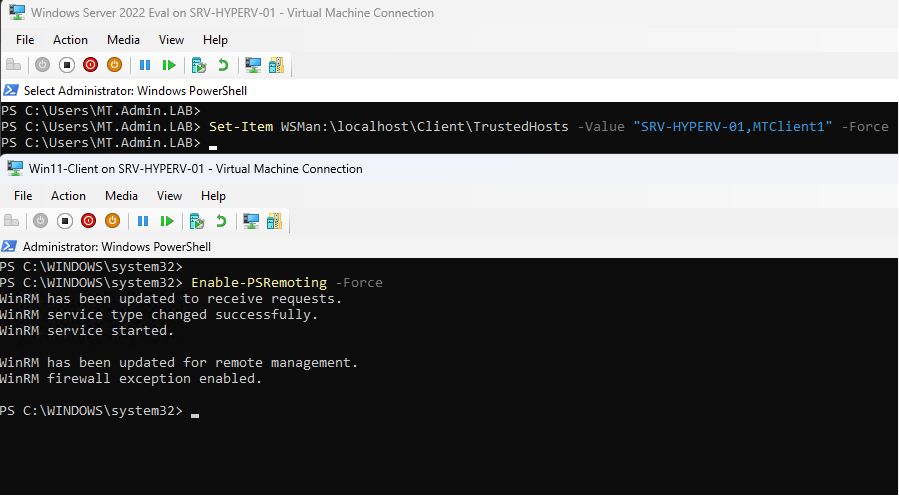
7.2 GPO Inventory
All GPOs in the domain are returned with their status and creation/modification timestamps. Six GPOs are confirmed: the two default policies created at domain promotion, and four custom GPOs configured for the lab environment.
Get-GPO -All | Select-Object DisplayName, GpoStatus, CreationTime, ModificationTime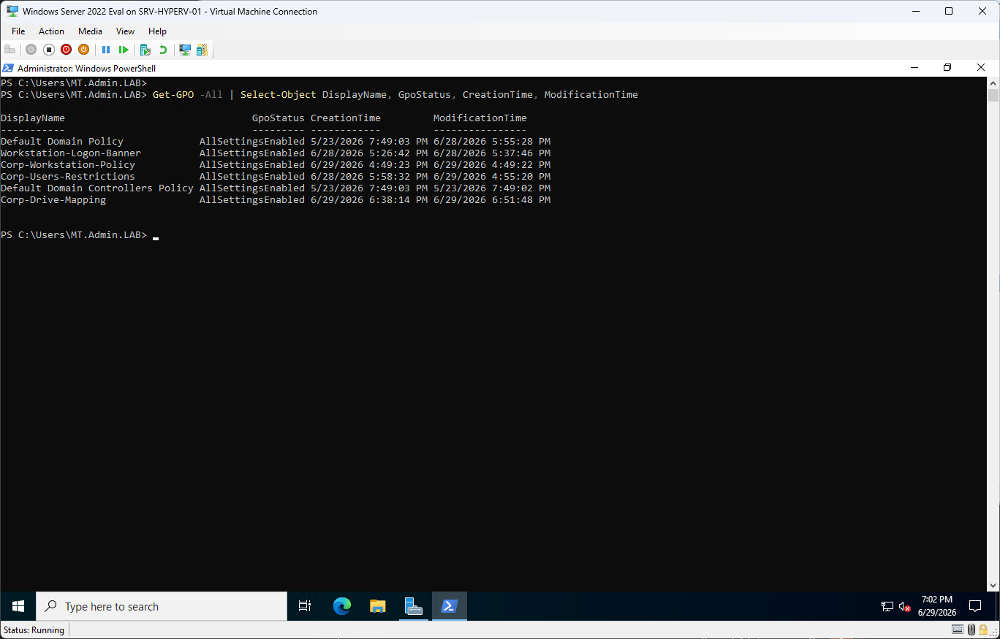
7.3 Individual GPO Detail
Specific GPOs are queried by name to return their GUID and status. The GUID is used internally by Active Directory to uniquely identify each GPO and is referenced in SYSVOL replication.
Get-GPO -Name 'Workstation-Logon-Banner' | Select-Object DisplayName, Id, GpoStatus
Get-GPO -Name 'Corp-Drive-Mapping' | Select-Object DisplayName, Id, GpoStatus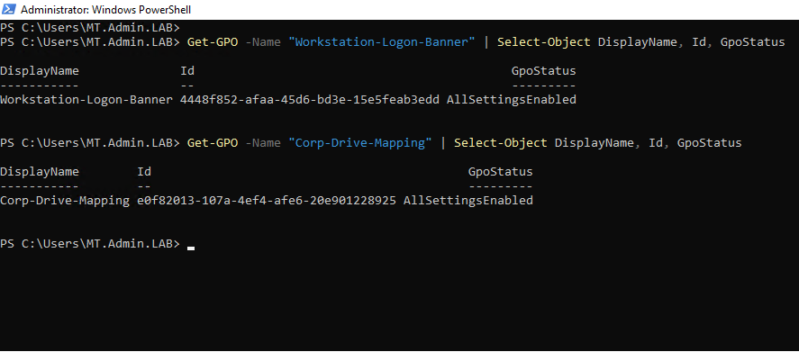
7.4 GPO Inheritance
GPO inheritance is queried for the Corp\Users OU to confirm which policies apply to user objects in that container. The output shows all inherited GPO links and confirms inheritance is not blocked.
Get-GPInheritance -Target 'OU=Users,OU=Corp,DC=mtlab,DC=local'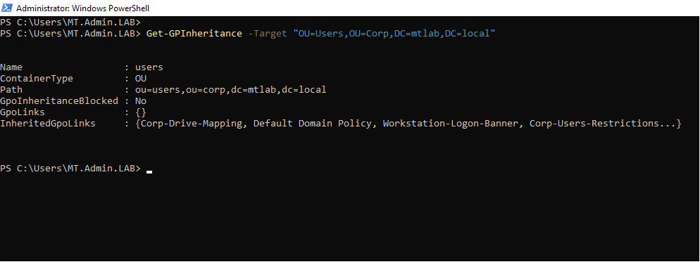
7.5 GPO Security Filtering
The security permissions on Corp-Drive-Mapping are queried to show which principals have rights to apply, edit, or read the policy. Authenticated Users having GpoApply permission means the policy applies to all authenticated domain users by default.
Get-GPPermission -Name 'Corp-Drive-Mapping' -All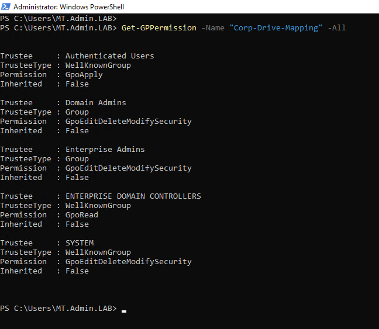
7.6 Remote Policy Verification
The applied Group Policy result set is queried remotely from MTClient1 using Invoke-Command. This confirms which GPOs have been applied to both the computer and the currently logged-in user, and identifies any policies that were filtered out.
Invoke-Command -ComputerName MTClient1 -ScriptBlock { gpresult /r }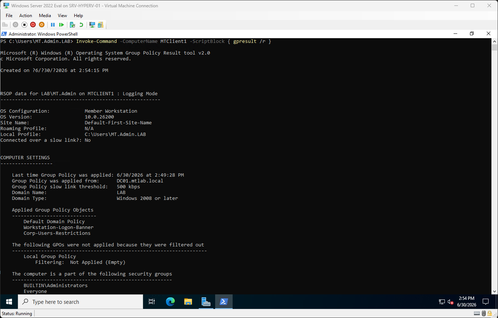
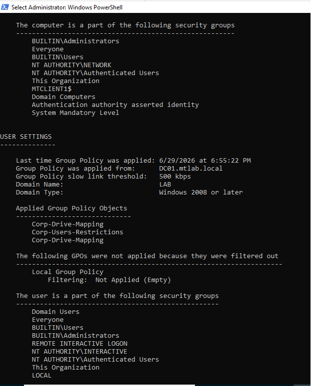
Summary
This page covered PowerShell-based administration of the mtlab.local lab environment across seven operational subsections. All commands were executed under the LAB\MT.Admin privileged account from DC01.mtlab.local, with Hyper-V management performed via a remote PSSession to SRV-HYPERV-01.
The following was demonstrated:
- Verified and configured PowerShell execution policy (RemoteSigned at LocalMachine scope)
- Confirmed availability of ActiveDirectory, DhcpServer, and DnsServer RSAT modules
- Established a remote PSSession to SRV-HYPERV-01 using local Lab-Client credentials, after enabling PSRemoting on the host and configuring TrustedHosts on DC01
- Queried the full Active Directory environment: OU structure, user accounts, group membership, and detailed user attributes
- Demonstrated the complete user lifecycle: provisioned Test.User in Corp\Users, updated department and title attributes, and disabled the account
- Queried DHCP scopes, utilization statistics, and active leases across VLAN 10, 20, and 40 subnets
- Confirmed DHCP server is domain-joined and authorized in Active Directory
- Queried DNS zones, forwarder configuration, and resource records in the mtlab.local forward zone
- Managed Hyper-V remotely: VM inventory, virtual switch configuration, and VHDX disk path verification
- Performed a system health check covering disk space, critical service status, recent event log errors, and server uptime
- Queried the full GPO inventory, individual GPO GUIDs, OU inheritance chain, and security filtering permissions
- Enabled WinRM on MTClient1 and verified applied Group Policy via remote Invoke-Command gpresult
Group Policy and Ubuntu Server/Ansible subsections will be expanded in future iterations as those lab configurations are completed. PowerShell cmdlets targeting GPO management (Backup-GPO, Get-GPOReport) and cross-platform Linux interop via Ansible will be added as additional subsections once those environments are fully built out.
↑ Back to top